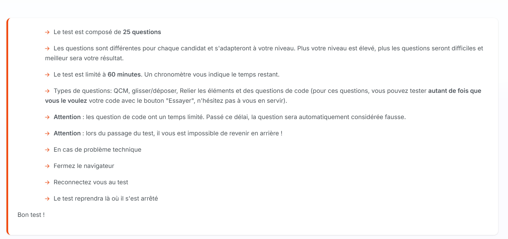
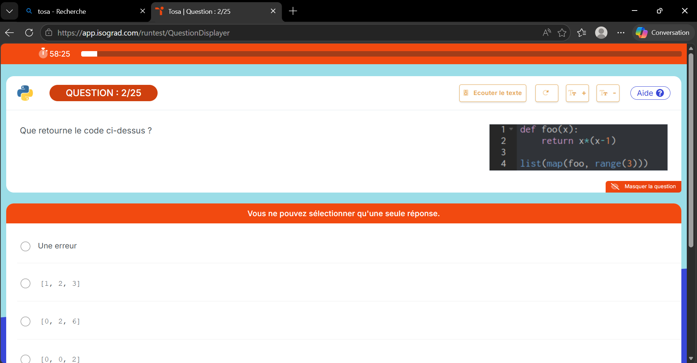
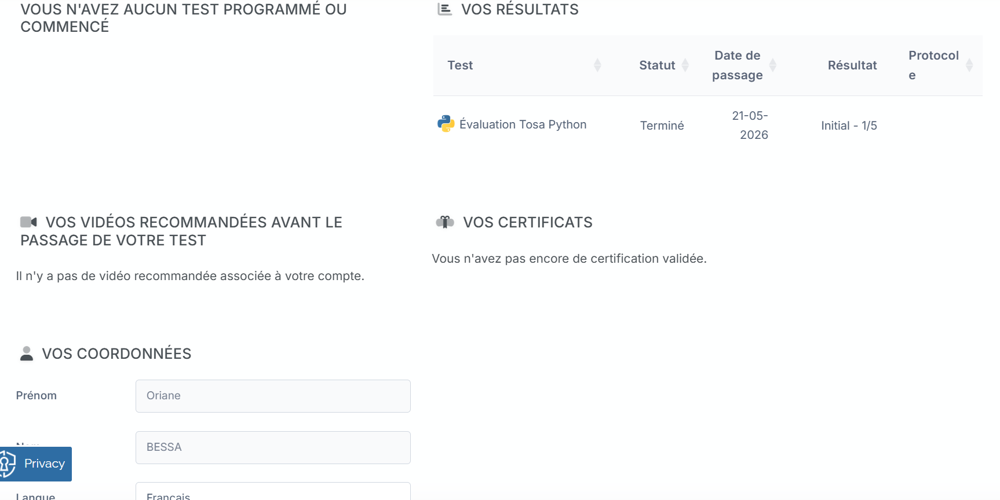
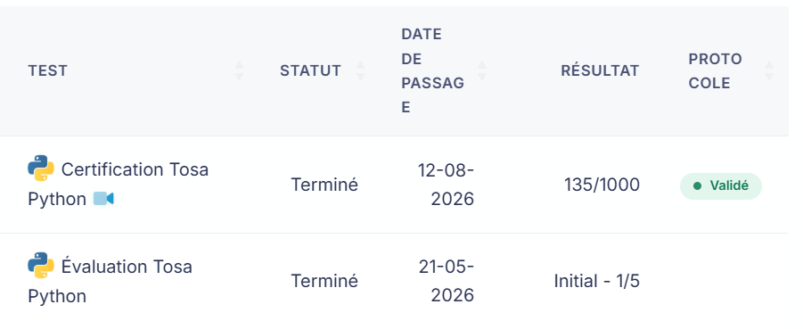

Actuellement en 2eme année de BTS Services Informatiques aux Organisations(SIO), je souhaite poursuivre mes études dans une licence pro et terminer dans un master pour devenir chef d'une entreprise d'informatique et de communication.Je suis une personne sociable et souriante. J'aime beaucoup en dehor des études dessiner faire du chant,ecrire, lire et regarder des dessin animer.
Voici quelques projets réalisés pendant ma formation et mes stages.
En année de terminale, j'ai effectué un stage de développeur durant lequel j'ai créé un site internet avec WordPress. J'ai également effectué le suivi des clients et réalisé des factures pour la vente de sites internet.
Durant ma première année de BTS, mon deuxième stage m'a permis de travailler sur l'automatisation de l'envoi de mails. J'ai également appris les bases de Python afin de créer un outil capable de ranger et trier les identités des clients puis de les envoyer dans un document Excel.
J'ai créé un site internet permettant de présenter plusieurs films avec leur catégorie, leur résumé et leur note.
J'ai créé un site internet avec Visual Studio Code en utilisant HTML et CSS pour un hôtel. Le site présente les différents tarifs, les chambres, une page d'accueil et les informations de contact.
Voici les outils et technologies que j'ai utilisés pendant ma formation et mes différents projets.
HTML : langage utilisé pour créer les sites dans les projets en classe ou en stage.
CSS : langage utilisé pour mettre des styles sur les sites dans les projets en classe ou en stage.
Bootstrap : outil qui utilise HTML, CSS et JavaScript.
Visual Studio Code : application utilisée pour développer.
WordPress : application de création de sites web rapide et facile, utilisée durant mon premier stage.
Windows : système d'exploitation.
Machines virtuelles : fichier logiciel qui se comporte comme un ordinateur complet et indépendant à l'intérieur d'un autre ordinateur.
Tosa : une certification internationale de référence qui mesure et valide les compétences informatiques, bureautiques et digitales.
Zapier: est un outil en ligne qui permet de connecter différentes applications entre elles et d'automatiser des tâches répétitives sans avoir besoin de coder.
🌐l Internet des objets (IoT)
L Internet des objets (IoT) sont des objets physiques capables de se connecter à un réseau et d’échanger des données. Ongle retrouve souvent dans les maisons connectées, industrie, santé, transports, agriculture ou encore sécurité. Comme par exemple les montres connectées, caméras, thermostats, capteurs industriels, voitures connectées et systèmes d’alarme.
Matter améliore la maison connectée
Matter permet à différents appareils et écosystèmes de maison connectée de mieux fonctionner ensemble. Cette version améliore notamment les performances des caméras et des sonnettes vidéo et apporte des améliorations au streaming vidéo et audio. L'objectif est de rendre les objets connectés plus compatibles entre eux, même lorsqu'ils proviennent de fabricants différents Source — Connectivity Standards Alliance
Matter développe les fonctionnalités de l'IoT La version Matter 1.5 a ajouté plusieurs catégories d'appareils et fonctionnalités, notamment les caméras, les dispositifs de fermeture, les capteurs de sol et de nouvelles fonctions de gestion de l'énergie. CCSA-IOT Impact sur l'IoT L'IoT ne concerne donc plus uniquement les ampoules ou les prises connectées. Les standards évoluent pour prendre en charge des usages plus complexes : surveillance vidéo ; gestion de l'eau ; gestion de l'énergie ; sécurité de la maison ; automatisation.Source — Connectivity Standards Alliance L'IoT et la cybersécuritéLe premier jour de mon stage j'ai dû faire une évaluation de plusieurs questions sur Python pour voir mon niveau. Et à la fin de mon stage j'ai pu avoir l'opportunité de passer une certification sur Python. Cela m'a permis de voir mon niveau dans ce domaine, de savoir où j'avais des lacunes et où j'étais plus à l'aise.



